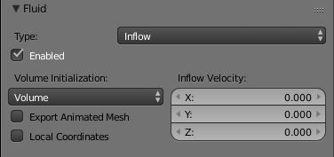
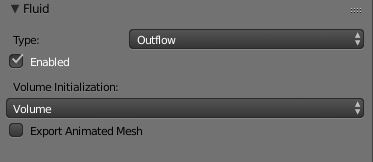

Fluid Inflow / Outflow¶
To control the volume of the fluid simulation, you can set objects in the scene to add or absorb fluid within the Fluid Domain.
Inflow¶

Fluid Inflow 设置.
- Volume Initialization Type
- See Volume Initialization Type
This object will put fluid into the simulation, like a water tap.
- Inflow Velocity
- Speed of the fluid that is created inside of the object.
- Local Coords/Enable
- Use local coordinates for the inflow. This is useful if the inflow object is moving or rotating, as the inflow stream will follow/copy that motion. If disabled, the inflow location and direction do not change.
- Animated Mesh/Export
- See Animated Mesh/Export
Outflow¶

Fluid Outflow 设置.
Any fluid that enters the region of this object will be deleted (think of a drain or a black hole). This can be useful in combination with an inflow to prevent the whole domain from filling up. When enabled, this is like a tornado (waterspout) or “wet vac” vacuum cleaner, and the part where the fluid disappears will follow the object as it moves around.
See also
- Volume Initialization Type
- Animated Mesh/Export